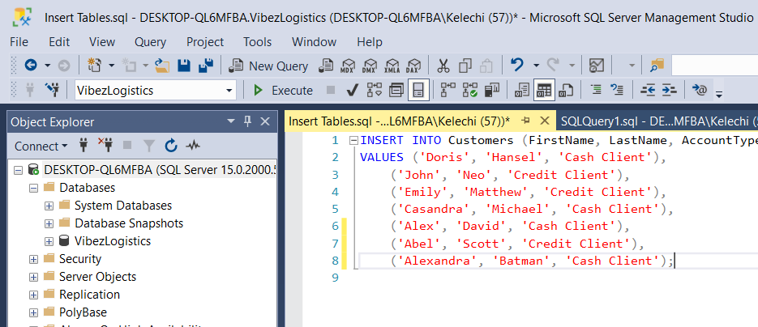
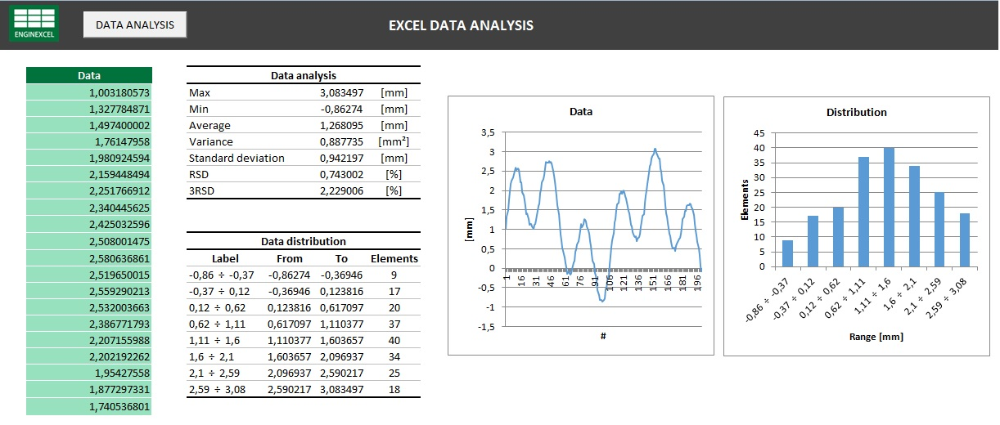
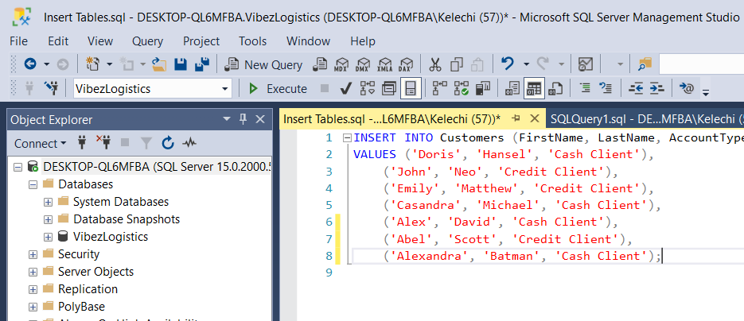
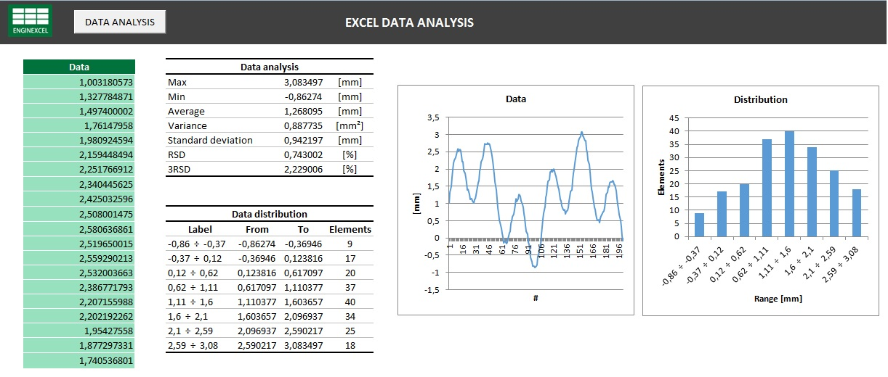
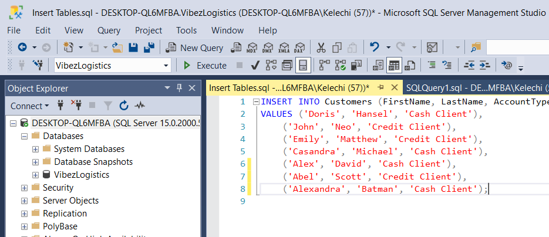
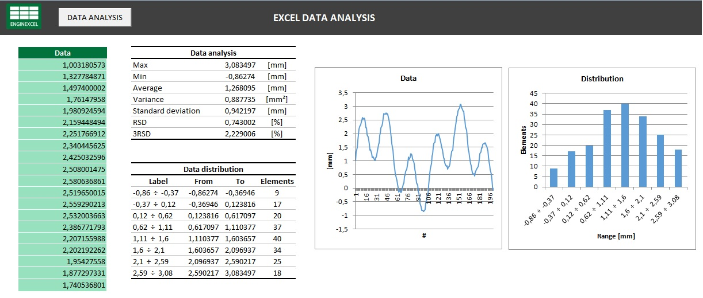

Data Analyst with 2+ years of experience in database management and data analysis, specializing in the creation and validation of Backtesting Reference Datasets (RDS) for risk models. Skilled in SQL, SAS, and Excel, with expertise in ensuring data quality, performing data comparisons, and providing actionable insights. Experienced in migrating SAS code to Dataiku recipes and familiar with PySpark for big data processing.


Pursued bachelor's degree in Computer Science & Engineering in BIT, Bangalore. My overall GPA is 8.25.
Secured 86.4% (overall) and 87.33% (PCM).Scored highest marks(95) in Maths in school.
Secured 9.8 CGPA and won an award in Badminton contest at inter-school level.
My resume provides a concise overview of my experience, skills, and accomplishments — For hiring managers and collaborators—my complete resume is just a click away.
Download My ResumeFeel free to get in touch. Open for opportunity in the field of analystics and science as a Data Analyst.